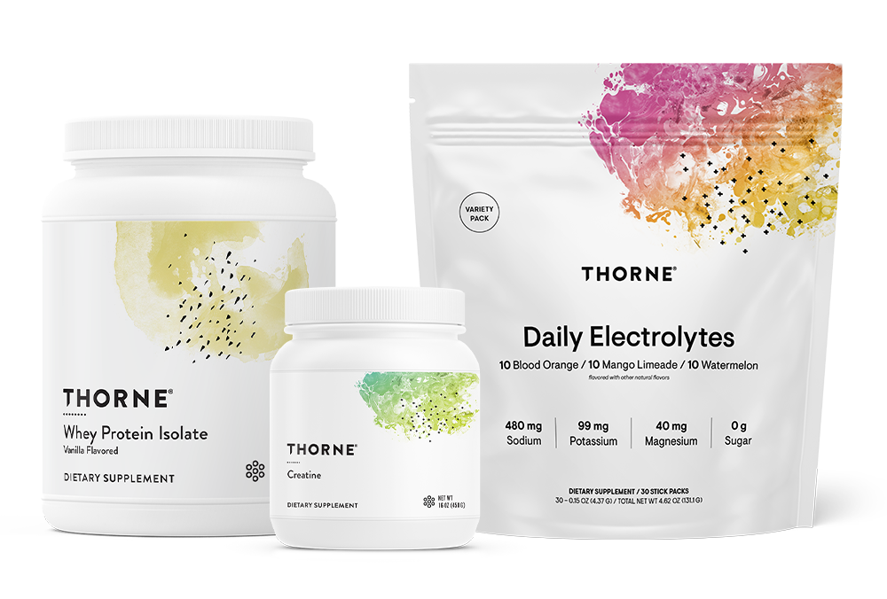

S宝洁收购 Thorne：个护巨头开始把“产品＋检测＋建议”当成一门长期生意
8 月 4 日，宝洁与 Thorne 宣布签署最终收购协议；L Catterton 披露交易对价为 38 亿美元现金，预计于 2026 年第四季度完成，仍待惯常交割条件和监管审批。完成后，Thorne 将纳入宝洁健康护理业务，其既有组合覆盖营养补充剂、健康检测和个性化健康建议。宝洁｜Thorne｜L Catterton
这笔交易的价值不只在补充剂规模，而在于把产品、检测和后续建议连成一段可持续经营的用户关系。对口服美容、头皮健康、敏感肌管理等相邻品类而言，未来的竞争门槛会更接近“科学证据＋专业网络＋持续服务”：品牌需要证明用户为什么持续留下，而不只是为什么首次购买。
